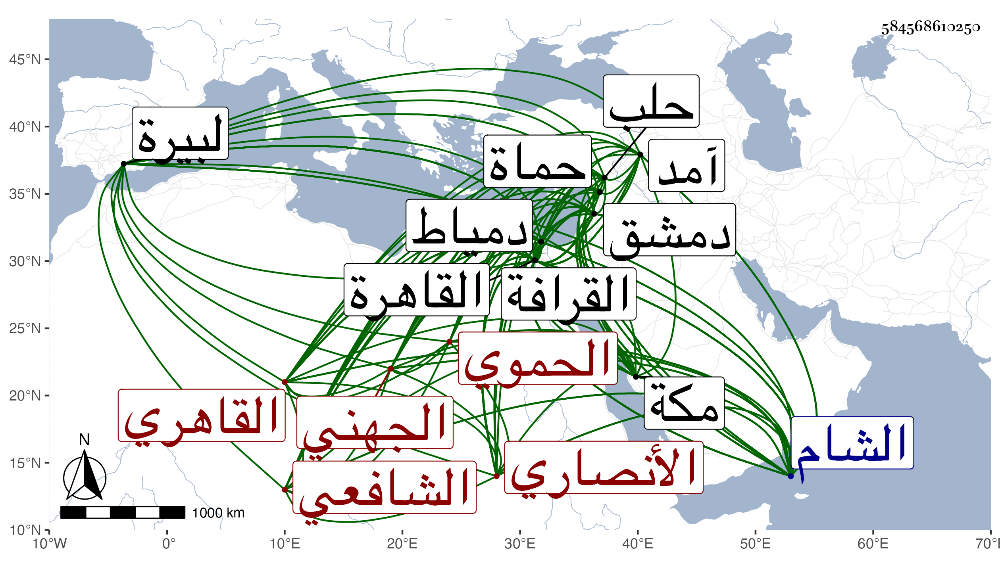

0902Sakhawi.DawLamic.ITO20230111-ara1.EIS1600.584568610250
Biography ID: 584568610250
583
محمد بن محمد بن محمد بن عثمان بن محمد بن عبد الرحيم بن إبرهيم بن هبة الله بن المسلم بكسر اللام الثقيلة ابن هبة الله بن المسلم بكسر اللام الثقيلة ابن هبة الله بن حسان بن محمد بن منصور بن أحمد بن علي بن عامر بن حسان بن عبد الله بن أحد الثقات من التابعين عطية ابن الصحابي الشهير أبي يحيى عبد الله أنيس الكمال أبو المعالي بن ناصر الدين أبي عبد الله بن الكمال بن الفخر بن الكمال أخي الشرف هبة الله ابني النجم ابن الشمس أبي طاهر وأبي إسحق ابن العفيف الجهني الأنصاري الحموي ثم القاهري الشافعي الماضي أبوه ويعرف كسلفه بابن البارزي ويقال أنهانسبة لباب أبرز ببغداد وخفف لكثرة دوره وأمه هي ططر ابنة الكمال محمد بن الزين عبد الرحمن بن الصاحب الفرفور التي أبوها خال والدة زوجها أسن ابنة الزين . ولد في ليلة حادي عشر ذي الحجة سنة ست وتسعين وسبعمائة بحماة ونشأ بها في كنف أبيه فحفظ القرآن وصلى به في سنة ست تسع وثمانمائة بالقاهرة حين كان مع أبيه وحفظ بعد عوده لبلده العمدة والتمييز في الفقه لقريبهم الشرف بن البارزي وألفية النحو وغيرها وتلا لأبي عمرو على الشمسين ابن زويغة بمعجمتين مصغر وابن القونسي بضم القاف وإسكان الواو ثم نون مكسورة وبحث في دمشق حين كان بها سنة ثمان ألفية النحو على الشرف محمد الأنطاكي بل سمع عليه بقراءة والده بحثا شرحها لابن أم قاسم وحل من التمييز على ابن إمام المشهد ثم رحل به أبوه إلى حلب قاضيا بها في سنة ثلاث عشرة فقرأه أيضا على حافظها البرهان وحفظ هناك التلخيص ، ثم انتقلا إلى القاهرة في سنة خمس عشرة مع المؤيد فأخذ في الفقه والحديث عن الولي العراقي وفي الفقه وأصوله عن العز بن جماعة بحث عليه قطعة من منهاج البيضاوي ومن التمييز وسمع عليه كثيرا من أصول الدين والمعاني والبيان وغيرها كبحث جميع الطوالع وشرح المقاصد والعضد والمطول وغيرها وكذا أخذ في العقليات عن تلميذه ابن الأديب ثم عن البساطي والعلاء البخاري ولازمه كثيرا وانتفع به علما وسلوكا فكان مما بحثه عليه قطعة من الحاوي الصغير وأخذ عنه المعاني والبيان والأصلين وسمع عليه قطعة كبيرة من الكشاف ولم ينفك عنه حتى ولي كتابة السر وكتب على الزين بن الصائغ وأخذ في المبادئ عن يحيى العجيسي وغيره العربية وعن العز القدسي قطعة من التمييز في آخرين ممن كان يجيء له إلى بيته وكذا قرأ البخاري على التقي المقريزي بل سمعه مع غيره من الأجزاء قبل بدمشق عاليا على عائشة ابنة ابن عبد الهادي وسمع أيضا على الجمال بن الشرائحي وغيره ، وأجاز له الشهاب أحمد بن موسى المتبولي والنور الشلقامي وابن الجزري والواسطي ويونس الواحي وعائشة الحنبلية وآخرون من طبقتهم بل لا أستبعد أن يكون عنده أقدم منها ، واجتهد في الأدبيات حتى برع فيها وصارت له يد طولى في المنثور والمنظوم سيما في الترسل والإنشاء ولذا استنابه أبوه في كتابه السر بالقاهرة ثم استقل بها في شوال سنة ثلاث وعشرين بعد موته ولم يلبث أن انفصل عنها في محرم التي تليها واستقر في نظر جيشها فأقام فيه نحو عشرة أشهر ، وهو في غضون هذا كله غير منفك عن المطالعة والاشتغال بالعلوم والأدب والمذاكرة ولقاء الفضلاء والأدباء وتزايد بعده ليفرغه إلى أن استقر في كتابة سر الشام في رجب سنة إحدى وثلاثين ثم بعد أزيد من أربع سنين بيسير حين قدم القاهرة صحبه نائبها سودون أضيف إليه قضاؤها عوضا عن الشهاب بن المحمره وسر شيخه العلاء البخاري بولايته مع شدة نفرته ممن كان يلي القضاء ونحوه من جماعته حتى قال وكان بالشام إذ ذاك : الآن أمن الناس على أموالهم وأنفسهم ولم يلبث أن أعيد لكتابة سر القاهرة فدام سنين ثم صرف ورجع إلى الشام على قضائه عوضا عن السراج الحمصي وخطب بجامعه الأموي ثم أعيد في أول سلطنة الظاهر إلى كتابة سر القاهرة واستمر حتى مات سوى ما كان يتخللها من الأيام التي كان ينفصل فيها ثم يعاد ، وأضيف إليه في أثناء ذلك قضاء دمياط عوضا عن الولوي بن قاسم ثم رغب عنه وحمدت سيرته في مباشراته كلها ، وكان إماما عالما ذكيا عاقلا رئيسا ساكنا كريما سيوسا صبورا حسن الخلق والخلق والعشرة متواضعا محبا في الفضلاء وذوي الفنون مكرما لهم إلى الغاية لا سيما الغرباء حتى صار محطا لرحالهم راغبا في اقتناء الكتب النفيسة غي مستكثر لما يبذله في تحصيلها عجبا في ذلك سمحا بالعارية جدا ممدحا امتدحه الفحول من الشعراء وخاطبه القاضي ناصر الدين محمد بن عثمان الجيتي الحنفي بقوله :
| ديني تكمل مذ جعلتم قبلتي | وسجدت في أعتابكم بجبيني |
| وغدوت مفتخرا بكم بين الورى | ما الفخر إلا في كمال الدين |
كل ذلك مع الشهامة والكرم والإحسان إلى الطلبة ومحبتهم وضمهم إليه بحيث يجري على كثير منهم المرتبات الشهرية والسنوية ولما ارتفع سعر الغلال في بعض السنين حسن له بعض جماعته أن يصرف للمرتب لهم في البر دراهم فقبحه وقال نعطيهم البر في حال كونه ترابا ثم نعطيهم التراب في حال كونه ذهبا أو نحو هذا ، كل ذلك مع ما يضاف إله من حسن البشاشة وحلاوة الكلام وظرف الشكالة ولطافة الشمائل وكونه هينا لينا ألوفا سريع الانقياد إلى الخير مهذب العشرة ليس فيه أذى لأحد من خلق الله حتى ولا لمن يؤذيه كم ممن أكل ماله وأغضى عنه بل وربما أحسن إليه بعد ، نعم إذا تحقق من أحد العناد وقصد المغالبة غضب غضب الحليم وأذاقه من أنواع الشدائد العذاب الأليم ، مع الحشمة والمجاملة وعدم الإفحاش في المعاملة وهو منطبع في غالب العلوم لا سيما فنون الأدب والنحو والمعاني والبيان والعروض وغيرها رائق الشعر فائق النثر ذواق للمعاني الدقيقة كثير الاستحضار للمقاطيع والمطولات والموشحات وغير ذلك جدا وهزلا حسن المذاكرة فكه المحاضرة عجب لمن يتأمله فإنه يراه في غاية السكون بحيث يقضي عليه بالجمود وذهنه كالنار المضرمة وبالجملة فهو عريق الأصالة ضخم الرياسة عظيم الآباء كريم الأجداد عين الرؤساء بغير منازع في تفرده بقطر من أقطار الأرض . وقد حج غير مرة منها في سنة خمسين فحمل معه من طلبة العلم والمشايخ المعتقدين والفقراء والمنقطعين من يتعسر حصرهم غير أنه كان معه نحو أربعمائة نفر ونحو ضعفهم من الدواب ولم يدع أحدا منهم يتكلف إلى شيء بل اشترى لأهليهم الهدايا ورجع كل منهم وهو ذاكر لما يبهر العقل من الاحتمال والإحسان وطلاقة الوجه ولين القول وتكلف إلا كمل من وجوه العبادة كالتجرد في الإحرام على ضعف بدنه والمتابعة في سنن الحج وواجباته الأمر المشروع سيما في أشياء قد هجرت وحصل لأهل الحرمين منه أفضال وبر على جاري عادته ثم قدم فملأ الناس خيرا وبرا وحدث في مكة باليسير وكذا حدث بالقاهرة سمع عليه الأئمة وقرأت عليه أشياء بل كتبت عنه من نظمه ما كتب به على نظم سيرة المؤيد لابن ناهض بعد كتابة والده ما نصه :
| هذا كتابك يا ناهض قاعد | عن مدحه أدبي وعن تهذيبه |
| فاشكر لمادحه على تقصيره | ولمن هجاه فإنه يهذي به |
وقوله :
| مرت على فهمي وحلو لفظها | مكرر فما عسى أن أصنعا |
| ووالدي دام بقا سودده | لم يبق فيها للكمال موضعا |
وكذا كتبت عنه من نظمه غير هذا مما أودعته في المعجم وغيره بل سمع شيخنا من لفظه حين كانا مسافرين سحبة الركاب السلطاني إلى آمد بظاهر البيرة قصيدة الأديب شيخ على التي امتدح بها البدر بن الشهاب محمود وسمعها الكمال من ناظمها وهي مثبتة عندي في مكان آخر . ومحاسنه كثيرة حتى شاع بها ذكره وبعد فيها صيته وصار كما قيل قل أن ترى العيون في مجموعه مثله . وله اعتراضات جيدة على شرح بديعية ابن حجة . واستمر على جلالته حتى مات في يوم الأحد سادس عشرى صفر سنة ست وخمسين وصلي عليه بسبيل المؤمني في مشهد حافل شهده السلطان والأمراء وسائر القضاة والأئمة والأعيان تقدمهم أمير المؤمنين ، ودفن بتربة أبيه المجاورة لقبة الإمام الشافعي من القرافة وأسف الناس على فقده وكثر الثناء عليه وعلى جل أوصافه ولم يخلف بعده في مجموعه مثله ، ورثاه غير واحد وحصل التغالي في كتبه بحيث بيعت بأغلى الأثمان ووفيت ديونه وهي كثيرة جدا منها وظهر بذلك حسن نيته في كرمه وعطيته . وهو في عقود المقريزي مقتصرا على أنه ولي كتابة السر بعد أبيه في الأيام المؤيدية رحمه الله وإيانا .
